Ant & Neutral Creature Compendium
- Special Ants
- Spelchirio Ant (S4 Ranged / Guardian)
- Wingless Tiger Beetle (S4 Melee / Carrier)
- Giant Jaw (S5 Ranged / Guardian)
- Blue Velvet (S5 Support / Guardian)
- Indigo Velvet (S5 Melee / Shooter)
- Azure Crazy (S5 Ranged / Shooter)
- Rainbow Scarlet (S5 Ranged / Carrier)
- White Crystal (S4 Ranged / Guardian)
- Sly Hunter (S4 Support / Shooter)
- (unnamed — Anselephila pedestris, S4 Support / Carrier)
- Crematogaster Inflata (S3 Support / Shooter)
- Saharan Silver Ant (S3 Ranged / Shooter)
- Golden Crystal (S1 Ranged / Carrier)
- Rainbow Chaser (S5 Ranged / Shooter)
- Bison Ant (S4 Melee / Guardian)
- Rainbow Wings (S4 Melee / Carrier)
- Golden Chaser (Kinbane Ant, S5 Melee / Carrier)
- Spotted Hunter (Azure Striped Mosquito Ant, S6 Support / Shooter)
- Brute Ant (S6 Melee / Guardian)
- Spotted Velvet (S6 Support / Carrier)
- Honey Pot Ant (S5 Ranged / Carrier)
- Red-Jaw Trap-Jaw Ant (S6 Melee / Guardian)
- Fungus Farmer Ant (S6 Support / Guardian)
- Striped Velvet Ant (S6 Support / Shooter)
- Twin-Spine Ant (S6 Ranged / Shooter)
- Amber Flower Ant (S6 Melee / Carrier)
- Ladybug Ant (S6 Ranged / Carrier)
- Neutral Creatures
Transcribed word-for-word (via NotebookLM) from screenshots of our own account's skill tooltips, stat screens, and talent tree screens. This is verbatim in-game text, not a summary or paraphrase.
This page is a work in progress. Out of 407+115+179 screenshots on hand, batches 4-11 and part of the 260720 folder (roughly 393 screenshots — 25 special ants + 4 neutral creatures) are covered so far. More will be added as additional screenshots are transcribed. Images shown here are cropped from the stat screen to show just the creature. A few ants (not yet broken through in our account) only have some of their skills documented.
Special Ants
Spelchirio Ant (S4 Ranged / Guardian)
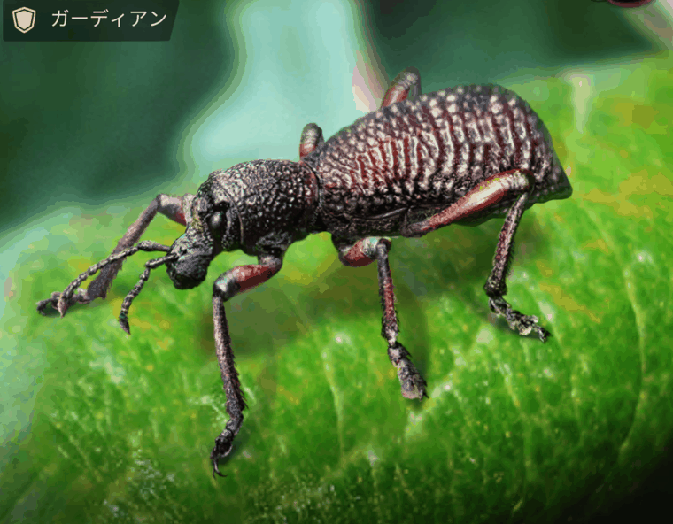
| Skill | Type | Current Lv effect | Max Lv effect |
|---|---|---|---|
| Dominance III | Command skill (formation with the special ant) | Deployment cap +100 (+special ant Lv*100) | Deployment cap +18,100 (+special ant Lv*100). Damage dealt by soldier ants in the formation +25% |
| Reckless Charge | Combat skill (2 enemy columns, range 5) | 43% chance to trigger: your formation takes 20% damage in exchange for 80% damage to 2 random enemy columns (guaranteed crit, +12% dmg to Shooter Ants) | 70% chance to trigger: same trade-off, 320% damage to 2 random enemy columns (guaranteed crit, +30% dmg to Shooter Ants) |
| Advanced Defense | Command skill (formation with the special ant) | Guardian Ant DEF +7.2% | Guardian Ant DEF +144% |
| Advanced Attack | Command skill (formation with the special ant) | Guardian Ant ATK +7.2% | Guardian Ant ATK +144% |
| Concentrated Strike | Combat skill (3 enemy columns, range 5) | On turns 2/4/6: 53% chance to deal 150% (+special ant Lv*1%) damage to all enemy columns, 22% chance to silence for 1 turn | On turns 2/4/6: 80% chance to deal 540% (+special ant Lv*1%) damage to all enemy columns, 50% chance to silence for 1 turn |
| Colony Charisma | Command skill (formation with the special ant) | Guardian Ant ATK/DEF +1.8%, damage +1.2%, HP +6.6%, "Dominance III" deployment cap +17% | ATK/DEF +36%, damage +24%, HP +18%, deployment cap +170%. Normal attack damage +75% |
| Reinforced Beak | Command skill (whole formation with the special ant) | Guardian Ant ATK +30% | Guardian Ant ATK +120% |
| Valiant Stance | Pre-battle skill (formation with the special ant) | Formation damage dealt +1.5%. Each time a buff (heal/shield etc.) is gained: skill damage +0.5%, skill damage reduction +0.5%, etc. | Damage dealt +25%. Each buff gained: skill damage +8%, skill damage reduction +8%, healing received +8% (stacks up to 4) |
data/notebooklm_extraction_batch9_260719.md
Wingless Tiger Beetle (S4 Melee / Carrier)
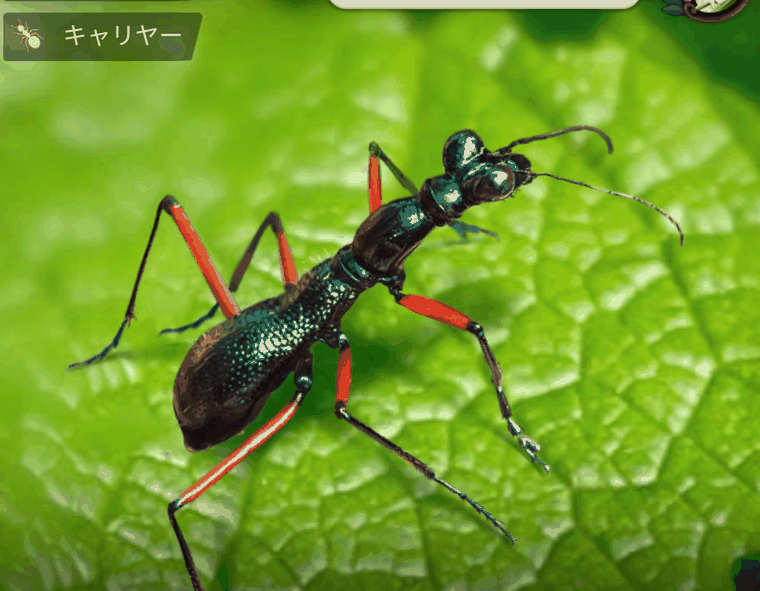
| Skill | Type | Current Lv effect | Max Lv effect |
|---|---|---|---|
| Dominance III | Command skill (formation with the special ant) | Deployment cap +100 (+special ant Lv*100) | Deployment cap +18,100 (+special ant Lv*100). Damage dealt by soldier ants in the formation +25% |
| Long-Legged Advantage | Combat skill (range 5) | Damage taken -7%. Each hit taken grants +10% extra evasion (stacking). On successful evasion, extra evasion resets and deals 160% (+special ant Lv*10%) damage to a random enemy column | Damage taken -35%. Same trigger deals 300% (+special ant Lv*1%) damage to a random enemy column |
| Advanced Defense | Command skill (formation with the special ant) | Carrier Ant DEF +7.2% | Carrier Ant DEF +144% |
| Advanced Attack | Command skill (formation with the special ant) | Carrier Ant ATK +7.2% | Carrier Ant ATK +144% |
| Wartime Relief | Combat skill (2 allied columns, range 2) | 52% chance to heal 1-2 random allied columns for 60% heal rate, ATK/DEF +20% for 1 turn | 70% chance, 180% heal rate, ATK/DEF +50% for 1 turn |
| Colony Charisma | Command skill (formation with the special ant) | ATK/DEF +1.8%, combat speed +15, HP +6.6%, "Dominance III" deployment cap +17% | ATK/DEF +36%, combat speed +60, HP +18%, deployment cap +170%. Normal attack damage +75% |
| Crimson Joint | Command skill (whole formation with the special ant) | Carrier Ant HP +12.2% | Carrier Ant HP +54% |
| Phantom Form | Combat skill (whole formation, range 2) | On each successful evasion, 42% chance for all your columns' skill damage +1% (skills requiring a wind-up gain +1% crit instead), 2 turns, stacking | 70% chance for skill damage +15% (or +15% crit), 2 turns, stacking |
Giant Jaw (S5 Ranged / Guardian)
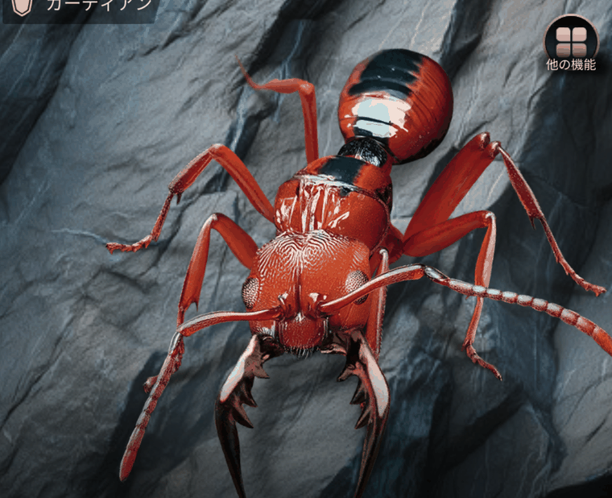
| Skill | Type | Current Lv effect | Breakthrough/next Lv effect |
|---|---|---|---|
| Dominance III | Command skill (formation with the special ant) | Deployment cap +18,100 (+special ant Lv*100) | After breakthrough: formation ATK +25%, DEF +25%, HP +10%, Guardian crowd-control effect +5%, formation's overall skill damage rate +10% |
| Giant Jaw Bite | Combat skill (2 enemy columns, range 5) | 65% chance: 300% (+special ant Lv*1%) damage to 2 random enemy columns + Mark for 2 turns. When an allied column deals damage, 40% chance to heal (heal rate 50%) | 305% (+special ant Lv*1%) damage, heal rate 52% |
| Advanced Defense | Command skill (formation with the special ant) | Guardian Ant DEF +83% | +91.3% |
| Advanced Attack | Command skill (formation with the special ant) | Guardian Ant ATK +83% | +91.3% |
| Brutal Suppression | Combat skill (2 enemy columns, range 5) | 75% chance: 260% (+special ant Lv*1%) damage to 2 random enemy columns. Marked targets are Suppressed (unable to act) for 1 turn | 265% (+special ant Lv*1%) damage |
| Colony Charisma | Command skill (formation with the special ant) | Guardian ATK/DEF +18%, damage +12%, HP +12%, "Dominance III" deployment cap +170% | ATK/DEF +19.8%, damage +13.2%, HP +12.6% |
| Blood-Stained Frame | Command skill (whole formation with the special ant) | Guardian Ant ATK +85% | +90% |
| Tactical Strike | Combat skill (3 enemy columns, range 5) | 80% chance: 150% (+special ant Lv1%) damage to all enemy columns. CC'd targets take an extra 150% (+special ant Lv1%); non-CC'd targets get CC resistance -20% for 2 turns (non-stacking) | 154% (+special ant Lv*1%) damage |
data/notebooklm_extraction_batch4_260719.md
Blue Velvet (S5 Support / Guardian)
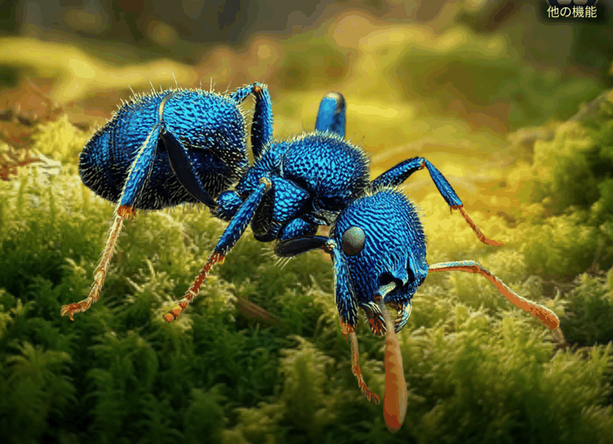
| Skill | Type | Effect |
|---|---|---|
| Dominance III | Command skill (formation with the special ant, broken through) | Deployment cap +18,100 (+special ant Lv*100), soldier ant damage dealt +25%. After breakthrough: formation ATK +25%, DEF +25%, HP +10%, Guardian skill damage +5%, skill 2 heal rate +10% |
| Healing Aura | Combat skill (whole formation, range 5) | 70% chance to heal all allied columns (heal rate 160%), next turn's skill/CC trigger chance +8% |
| Advanced Defense | Command skill (formation with the special ant) | Guardian Ant DEF +166% |
| Advanced Attack | Command skill (formation with the special ant) | Guardian Ant ATK +166% |
| Silencing Strike | Combat skill (2 enemy columns, range 5) | 70% chance: 200% (+special ant Lv*1%) damage to 2 random enemy columns, 55% chance to silence for 1 turn |
| Colony Charisma | Command skill (formation with the special ant) | Guardian ATK/DEF +18%, damage +12%, HP +12%, "Dominance III" deployment cap +170% |
| Blue Velvet Cuticle | Command skill (whole formation with the special ant) | Guardian Ant DEF +85% |
| Sustained Reinforcement | Pre-battle skill (whole formation, range 5) | Every turn, all your columns' ATK/DEF +20% (stacking, lasts until battle ends). Front row additionally gets damage reduction +3% |
data/notebooklm_extraction_batch4_260719.md
Indigo Velvet (S5 Melee / Shooter)
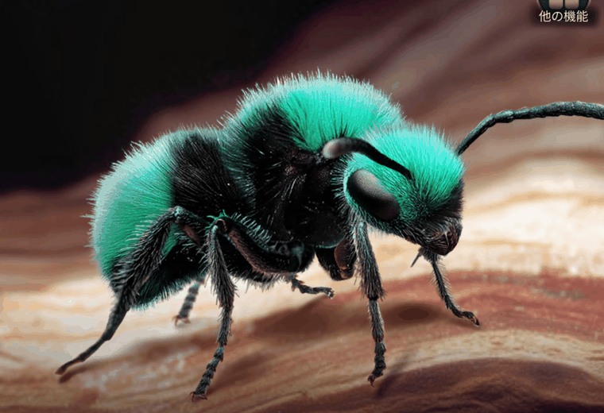
| Skill | Type | Effect |
|---|---|---|
| Keen Sense | Pre-battle skill (formation with the special ant) | While in the front row: dmg taken -20.5%, dmg dealt +20.5%, +4.1% per hit dealt (cap 41%) |
| Advanced Defense | Command skill (formation with the special ant) | Shooter Ant DEF +91.3% |
| Advanced Attack | Command skill (formation with the special ant) | Shooter Ant ATK +91.3% |
| Forceful Plunder | Combat skill (2 enemy columns, range 5) | 80% chance: 225% (+special ant Lv*1%) damage to 2 random enemy columns, target's skill DEF -30% (stacking, 2 turns) |
| Colony Charisma | Command skill (formation with the special ant) | Shooter ATK/DEF +19.8%, damage +13.2%, HP +12.6%, "Dominance III" deployment cap +170%, normal attack damage +52.5% |
| Bristled Armor | Command skill (whole formation with the special ant) | Shooter Ant HP +37.5% |
| Coordinated Pursuit | Combat skill (1 enemy column, range 5) | On turns 2/4/6/8, shares 82% of own buffs with the back row. When the back row deals damage, 35% chance to deal 203% extra damage to a random enemy column |
data/notebooklm_extraction_batch4_260719.md and batch5_260719.md
Azure Crazy (S5 Ranged / Shooter)
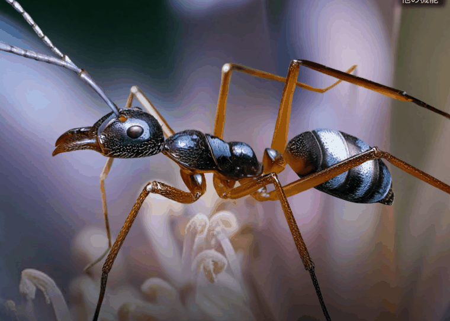
| Skill | Type | Effect |
|---|---|---|
| Dominance III | Command skill (formation with the special ant, broken through) | Deployment cap +18,100 (+special ant Lv*100), soldier ant damage +25%. After breakthrough: formation ATK/DEF +25%, HP +10%, skill-2 armor pen +5%, skill-5 damage rate +10% |
| Charging Thrust | Combat skill (1 enemy column, range 5) | 60% chance: 540% (+special ant Lv*1%) damage to a random enemy column, 25% armor penetration (ignores target's total DEF) |
| Advanced Defense | Command skill (formation with the special ant) | Shooter Ant DEF +166% |
| Advanced Attack | Command skill (formation with the special ant) | Shooter Ant ATK +166% |
| Born Hunter | Combat skill (3 enemy columns, range 5) | On turns 2/4/6/8, 80% chance: 184% (+special ant Lv*1%) damage to all enemy columns, +1 hit count per trigger |
| Colony Charisma | Command skill (formation with the special ant) | Shooter ATK/DEF +19.8%, damage +13.2%, HP +12.6%, "Dominance III" deployment cap +170%, normal attack damage +52.5% |
| Indigo-Patterned Abdomen | Command skill (whole formation with the special ant) | Shooter Ant ATK +90% |
| Purifying Field | Pre-battle skill (formation with the special ant) | Every 4 hits dealt: clear own debuffs, next skill damage dealt +32% |
data/notebooklm_extraction_batch5_260719.md
Rainbow Scarlet (S5 Ranged / Carrier)
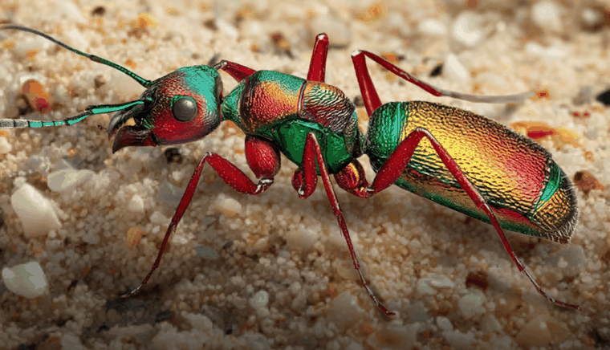
| Skill | Type | Effect |
|---|---|---|
| Dominance III | Command skill (formation with the special ant, broken through) | Deployment cap +18,100 (+special ant Lv*100), soldier ant damage +25%. After breakthrough: formation ATK/DEF +25%, HP +10%, skill-5 trigger chance +10%, bleed damage dealt +7% |
| Laceration | Combat skill (1 enemy column, range 5) | 80% chance: 335% (+special ant Lv*1%) damage to a random enemy column + Bleed (141% dmg/turn, higher at lower troop count, 2 turns). If target's troops >50%, apply a 2nd bleed stack |
| Advanced Defense | Command skill (formation with the special ant) | Carrier Ant DEF +91.3% |
| Advanced Attack | Command skill (formation with the special ant) | Carrier Ant ATK +91.3% |
| Power Amplification | Combat skill (3 enemy columns, range 5) | After 1 turn of setup, 80% chance: 204% (+special ant Lv*1%) damage to all enemy columns; debuffed targets take an extra +41% |
| Colony Charisma | Command skill (formation with the special ant) | Carrier ATK/DEF +19.8%, combat speed +60, HP +12.6%, "Dominance III" deployment cap +170%, normal attack damage +52.5% |
| Iridescent Carapace | Command skill (whole formation with the special ant) | Carrier Ant ATK +90% |
| Bloodthirsty Slaughter | Pre-battle skill (2 enemy columns, range 5) | Own dmg dealt +21%, converts 20% of it into own troop count. At the start of each turn, 2 random enemy columns get dmg taken +10.5% / healing received -22% (1 turn) |
data/notebooklm_extraction_batch5_260719.md
White Crystal (S4 Ranged / Guardian)
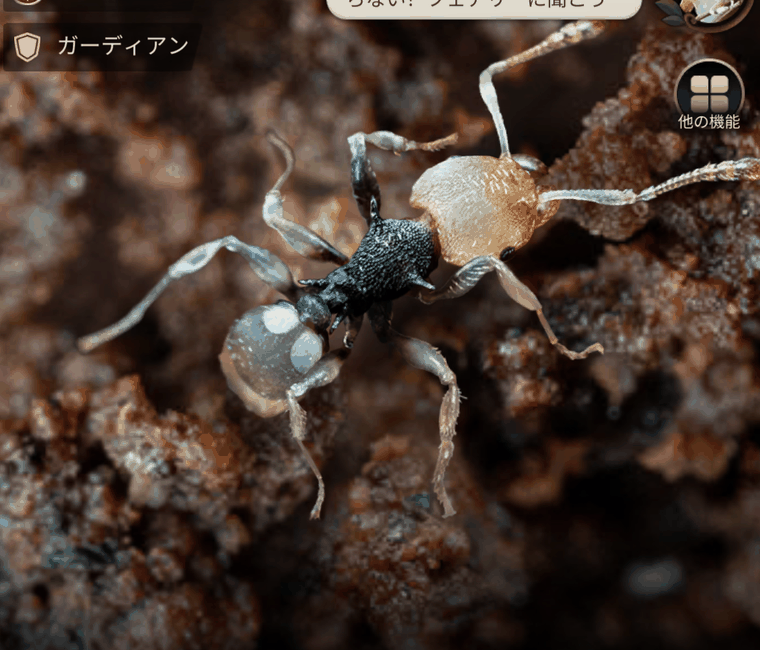
| Skill | Type | Effect |
|---|---|---|
| Dominance III | Command skill (formation with the special ant) | Deployment cap +18,100 (+special ant Lv*100), soldier ant damage +25% |
| Joint Siege | Combat skill (formation with the special ant, range 5) | Shares 10% of the front row's ATK stat. Every 8 hits dealt by the front row: 300% (+special ant Lv*1%) damage to all enemy columns + 50% chance to silence for 1 turn |
| Advanced Defense | Command skill (formation with the special ant) | Guardian Ant DEF +79.2% |
| Advanced Attack | Command skill (formation with the special ant) | Guardian Ant ATK +79.2% |
| Vicious Bite | Combat skill (range 5) | 75% chance: 355% (+special ant Lv*1%) damage to the enemy column with the highest troop count, own ATK +32% (2 turns, stacking) |
| Colony Charisma | Command skill (formation with the special ant) | Guardian ATK/DEF +19.8%, damage +13.2%, HP +12.6%, "Dominance III" deployment cap +170% |
| Sharpened Mandibles | Command skill (whole formation with the special ant) | Guardian Ant ATK +79.5% |
| Precision Strike | Combat skill (range 5) | 60% chance: 180% damage to all enemy columns, +10% skill damage rate per hit on a Shooter column (cap 5 stacks) |
data/notebooklm_extraction_batch5_260719.md
Sly Hunter (S4 Support / Shooter)
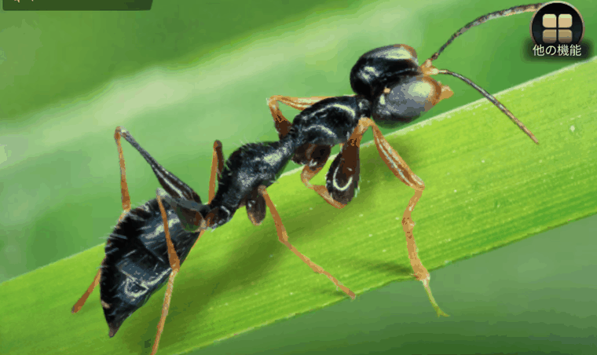
| Skill | Type | Effect |
|---|---|---|
| Dominance III | Command skill (formation with the special ant) | Deployment cap +18,100 (+special ant Lv*100), soldier ant damage +25% |
| Covert Assault | Combat skill (allied column, range 5) | Every turn, 60% chance: front row +1 normal attack count and +35% damage; simultaneously the back row deals 260% damage to 2 random enemy columns |
| Advanced Defense | Command skill (formation with the special ant) | Shooter Ant DEF +79.2% |
| Advanced Attack | Command skill (formation with the special ant) | Shooter Ant ATK +79.2% |
| Wild Awakening | Combat skill (2 enemy columns, range 4) | 51% chance: 315% (+special ant Lv*1%) damage to 2 random enemy columns, clears debuffs on own and one random allied column |
| Colony Charisma | Command skill (formation with the special ant) | Shooter ATK/DEF +19.8%, damage +13.2%, HP +12.6%, "Dominance III" deployment cap +170%, normal attack damage +52.5% |
| Hardened Carapace | Command skill (whole formation with the special ant) | Shooter Ant DEF +79.5% |
| Efficient Support | Pre-battle skill (whole formation, range 4) | From turn 2 onward, all allied columns' first damage dealt each turn +41%, triggers a heal afterward (heal rate 124%) |
data/notebooklm_extraction_batch5_260719.md and batch6_260719.md
(unnamed — Anselephila pedestris, S4 Support / Carrier)
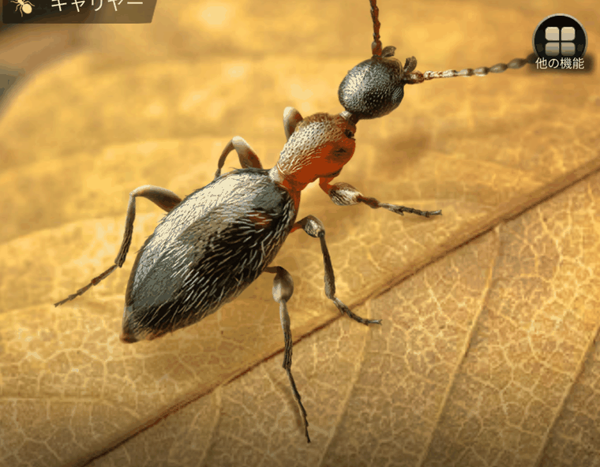
| Skill | Type | Effect |
|---|---|---|
| Dominance III | Command skill (formation with the special ant) | Deployment cap +18,100 (+special ant Lv*100), soldier ant damage +25% |
| Ambush | Combat skill (2 enemy columns, range 5) | 60% chance to apply a random debuff to 2 random enemy columns: Venom (150% dmg/turn) / Bleed (170% dmg/turn) / Corrosion (130% dmg/turn, DEF -30%) / Fragile (dmg taken +25%) / Weaken (dmg dealt -25%) |
| Advanced Defense | Command skill (formation with the special ant) | Carrier Ant DEF +79.2% |
| Advanced Attack | Command skill (formation with the special ant) | Carrier Ant ATK +79.2% |
| Weak Point Strike | Combat skill (1 enemy column, range 5) | 70% chance: 365% (+special ant Lv*1%) damage to a random enemy column, damage to debuffed enemies +32% (2 turns, stacking) |
| Colony Charisma | Command skill (formation with the special ant) | Carrier ATK/DEF +19.8%, combat speed +60, HP +12.6%, "Dominance III" deployment cap +170%, normal attack damage +52.5% |
| Solid Underbelly | Command skill (whole formation with the special ant) | Carrier Ant DEF +79.5% |
| Savage Devour | Pre-battle skill (all enemy columns, range 5) | After 1 turn of setup, 80% chance: 255% damage to all enemy columns, heals the allied column with lowest troop count at 455% rate (+25% per enemy debuff) |
data/notebooklm_extraction_batch6_260719.md
Crematogaster Inflata (S3 Support / Shooter)
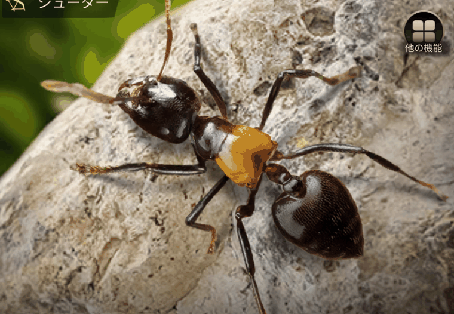
| Skill | Type | Effect |
|---|---|---|
| Dominance III | Command skill (formation with the special ant) | Deployment cap +18,100 (+special ant Lv*100), soldier ant damage +25% |
| Winning Tactics | Pre-battle skill (whole formation, range 2) | If acting first: damage dealt +30%. If acting last: damage taken -30% |
| Advanced Defense | Command skill (formation with the special ant) | Shooter Ant DEF +66% |
| Advanced Attack | Command skill (formation with the special ant) | Shooter Ant ATK +66% |
| Master Mimic | Combat skill (formation with the special ant, range 5) | 70% chance to copy and trigger a back-row Shooter's damage skill, effect +16% |
| Colony Charisma | Command skill (formation with the special ant) | Shooter ATK/DEF +19.8%, damage +13.2%, HP +12.6%, "Dominance III" deployment cap +170%, normal attack damage +52.5% |
| Boxy Frame | Command skill (whole formation with the special ant) | Shooter Ant DEF +64% |
| Healing Mucus | Combat skill (formation with the special ant, range 2) | All-column HP +21%; each skill trigger, 50% chance for DEF +27% (stacking) plus a heal (rate 105%) |
data/notebooklm_extraction_batch6_260719.md
Saharan Silver Ant (S3 Ranged / Shooter)
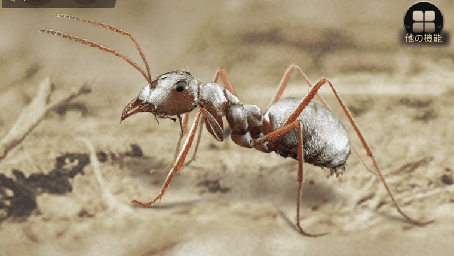
| Skill | Type | Effect |
|---|---|---|
| Dominance III | Command skill (formation with the special ant) | Deployment cap +18,100 (+special ant Lv*100) |
| Furious Momentum | Combat skill (1 enemy column, range 6) | 80% chance: 2 hits of 205% damage each to a random enemy column + 1 stack of Fragile Mark (each mark +7.5% skill damage taken, stacking, lasts until battle ends) |
| Advanced Defense | Command skill (formation with the special ant) | Shooter Ant DEF +66% |
| Advanced Attack | Command skill (formation with the special ant) | Shooter Ant ATK +66% |
| Silver Glimmer | Combat skill (3 enemy columns, range 6) | 70% chance: 135% (+special ant Lv*1%) damage to all enemy columns |
| Colony Charisma | Command skill (formation with the special ant) | Shooter ATK/DEF +19.8%, damage +13.2%, HP +12.6%, "Dominance III" deployment cap +170%, normal attack damage +52.5% |
| Dazzling Silver Armor | Command skill (whole formation with the special ant) | Shooter Ant ATK +64% |
| Precision Long Shot | Pre-battle skill (formation with the special ant) | Every turn, 52% chance: own position +1; damage +5.5% per unit of distance to target |
data/notebooklm_extraction_batch6_260719.md
Golden Crystal (S1 Ranged / Carrier)
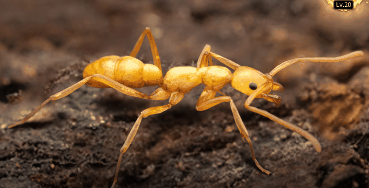
| Skill | Type | Effect |
|---|---|---|
| Dominance III | Command skill (formation with the special ant) | Deployment cap +18,100 (+special ant Lv*100), soldier ant damage +5% |
| Fervent Battle | Combat skill (1 enemy column, range 5) | 80% chance: 290% damage to a random enemy column, formation ATK +51.5% (2 turns) |
| Advanced Defense | Command skill (formation with the special ant) | Carrier Ant DEF +47.3% |
| Advanced Attack | Command skill (formation with the special ant) | Carrier Ant ATK +47.3% |
| Fierce Toxin | Combat skill (3 enemy columns, range 5) | After 1 turn of setup, 80% chance: 213% (+special ant Lv*1%) damage to all enemy columns + Venom (157% dmg/turn, 1 turn) |
| Colony Charisma | Command skill (formation with the special ant) | Carrier ATK/DEF +16.5%, combat speed +60, HP +10.5%, "Dominance III" deployment cap +170%, soldier ant damage +5% |
| Hunter Master | Command skill (whole formation with the special ant) | Carrier Ant ATK +46% |
| Surprise Strike | Combat skill (3 enemy columns, range 5) | 50% chance: 141% (+special ant Lv*1%) damage to all enemy columns; an extra +50% against Venom-afflicted enemies |
data/notebooklm_extraction_batch6_260719.md and batch7_260719.md
Rainbow Chaser (S5 Ranged / Shooter)
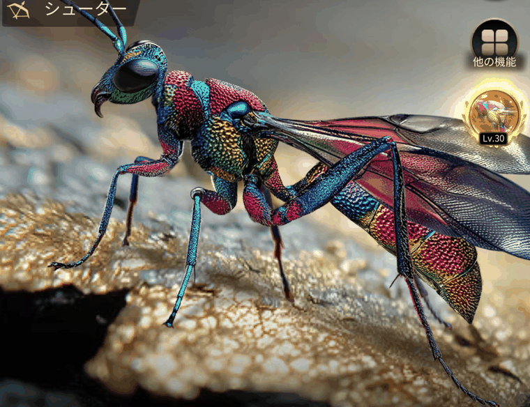
| Skill | Type | Effect |
|---|---|---|
| Dominance III | Command skill (formation with the special ant) | Deployment cap +18,100 (+special ant Lv*100), soldier ant damage +25% |
| Frenzied Barrage | Combat skill (1 enemy column, range 5) | 70% chance: 3 hits of 240% (+special ant Lv*1%) damage, each on a random target; an extra +20% if the same target is hit again |
| Advanced Defense | Command skill (formation with the special ant) | Shooter Ant DEF +166% |
| Advanced Attack | Command skill (formation with the special ant) | Shooter Ant ATK +166% |
| Dazzling Assault | Combat skill (1 enemy column, range 5) | On turns 2/4/6/8, 100% chance: 480% (+special ant Lv*1%) damage to a random enemy column; 80% chance to chain again (chance -20% per chain) |
| Colony Charisma | Command skill (formation with the special ant) | Shooter ATK/DEF +36%, damage +24%, HP +18%, "Dominance III" deployment cap +170%, normal attack damage +75% |
| Resplendent Cuticle | Command skill (whole formation with the special ant) | Shooter Ant ATK +135% |
| Tail Spine Piercer | Pre-battle skill (formation with the special ant) | Armor penetration +30.5% (ignores target's total DEF), CC resistance +10.5% per turn (stacking) |
data/notebooklm_extraction_batch7_260719.md
Bison Ant (S4 Melee / Guardian)
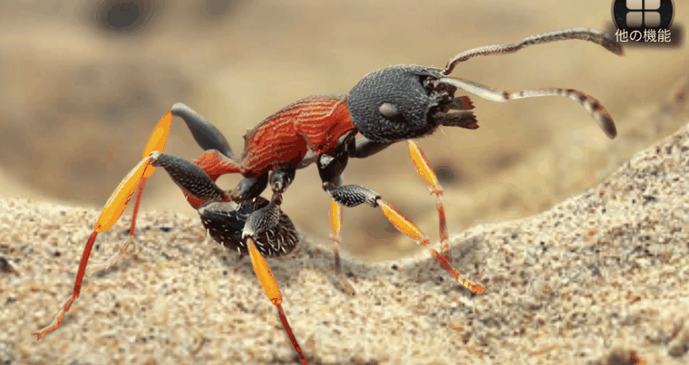
| Skill | Type | Effect |
|---|---|---|
| Dominance III | Command skill (formation with the special ant) | Deployment cap +18,100 (+special ant Lv*100), soldier ant damage +25% |
| Brutal Retaliation | Combat skill (2 enemy columns, range 5) | On taking damage, 35% chance to counter: 130% (+special ant Lv*0.25%) damage to 2 random enemy columns |
| Advanced Defense | Command skill (formation with the special ant) | Guardian Ant DEF +79.2% |
| Advanced Attack | Command skill (formation with the special ant) | Guardian Ant ATK +79.2% |
| All-Out Shelter | Combat skill (self + 1 random allied column, range 5) | 51% chance to trigger: own dmg taken -40% (-60% for the first 3 turns), also shares 30% of a random allied column's skill damage taken (2 turns) |
| Colony Charisma | Command skill (formation with the special ant) | Guardian ATK/DEF +19.8%, damage +13.2%, HP +12.6%, "Dominance III" deployment cap +170% |
| Golden Limbs | Command skill (whole formation with the special ant) | Guardian Ant HP +34.2% |
| Original Remedy | Combat skill (whole formation with the special ant, range 5) | On turns 2/4/6: Guardian formation skill damage rate +21%, 51% chance for a heal on dealing damage (heal rate 120%, up to 3 triggers per turn) |
data/notebooklm_extraction_batch7_260719.md
Rainbow Wings (S4 Melee / Carrier)
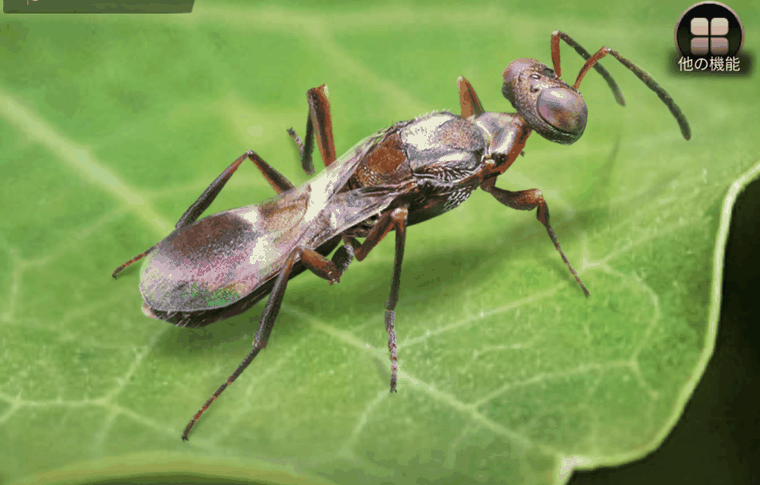
| Skill | Type | Effect |
|---|---|---|
| Dominance III | Command skill (formation with the special ant) | Deployment cap +18,100 (+special ant Lv*100), soldier ant damage +25% |
| Self-Healing Power | Pre-battle skill (formation with the special ant) | Evasion +20%. Before taking damage from a debuffed enemy, 60% chance for extra evasion +25% plus a heal (heal rate 130%) |
| Advanced Defense | Command skill (formation with the special ant) | Carrier Ant DEF +79.2% |
| Advanced Attack | Command skill (formation with the special ant) | Carrier Ant ATK +79.2% |
| Illusory Assault | Combat skill (2 enemy columns, range 4) | 70% chance: 235% (+special ant Lv*1%) damage to 2 random enemy columns, all-column skill trigger chance +5% (2 turns, stacking) |
| Colony Charisma | Command skill (formation with the special ant) | Carrier ATK/DEF +19.8%, combat speed +60, HP +12.6%, "Dominance III" deployment cap +170%, normal attack damage +52.5% |
| Winged Reinforcement | Command skill (whole formation with the special ant) | Carrier Ant HP +34.2% |
| Enchanting Form | Combat skill (formation with the special ant, range 5) | Each hit taken: all-column HP/DEF +5.5% (stacking, cap 10). Taking 5+ hits in one turn applies Weaken (dmg dealt -30%) and Bleed to 2 random enemy columns (exact bleed % unclear in source, needs re-verification) |
data/notebooklm_extraction_batch7_260719.md
Golden Chaser (Kinbane Ant, S5 Melee / Carrier)
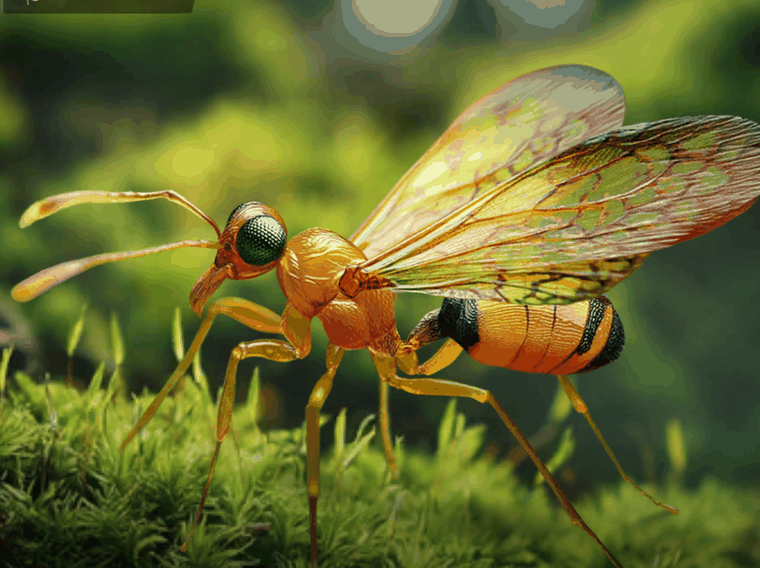
Only 3 skills are documented (not yet broken through in our account, so the remaining skill screens weren't captured).
| Skill | Type | Effect |
|---|---|---|
| Dominance III | Command skill (formation with the special ant, not broken through) | Deployment cap +100 (+special ant Lv100). Max Lv: cap +18,100 (+special ant Lv100), soldier ant damage +25%. After breakthrough: formation ATK/DEF +25%, HP +10%, Carrier CC resistance +20%, debuff damage dealt by Carrier +5% |
| Golden Frame | Command skill (whole formation with the special ant) | Carrier Ant HP +12.5% → 60% (Max Lv) |
| Moment of Leap | Pre-battle skill (whole formation, range 5) | All-column debuff damage dealt +2% → 30% (Max Lv), damage taken from debuffed enemies -2% → 30% (Max Lv) |
data/notebooklm_extraction_batch7_260719.md and batch8_260719.md
Spotted Hunter (Azure Striped Mosquito Ant, S6 Support / Shooter)
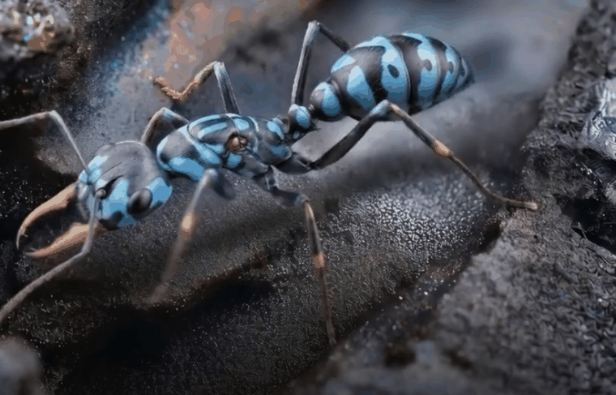
| Skill | Type | Effect |
|---|---|---|
| Dominance III | Command skill (formation with the special ant) | Deployment cap +100 (+special ant Lv*100) |
| Strike of Submission | Combat skill (2 random enemy columns in range, range 5) | Triggers while leading Shooter Ants in battle. 65% → 80% (Max Lv) chance: deal 120% → 260% damage to 2 random enemy columns, 70% → 80% chance to steal the target column's next-turn normal attack count and share it with a random allied column |
| Advanced Defense | Command skill (formation with the special ant) | Shooter Ant DEF +9.55% → 191% (Max Lv) |
| Advanced Attack | Command skill (formation with the special ant) | Shooter Ant ATK +9.55% → 191% (Max Lv) |
| Hunter's Instinct | Pre-battle skill (formation with the special ant, range 5) | Every turn, 65% → 75% (Max Lv) chance: back row skill crit rate +52% → 80% (1 turn). Each crit heals the allied column with lowest troop count (heal rate 105% → 180%), though the crit-rate bonus decays 10% per crit |
| Colony Charisma | Command skill (formation with the special ant) | Shooter ATK/DEF/damage/HP up, "Dominance III" deployment cap up |
| Blue-Spotted Camouflage | Command skill (whole formation with the special ant) | Shooter Ant DEF +55% → 150% (Max Lv) |
| Plundering Raid | Combat skill (1 enemy column, range 5) | 70% → 80% (Max Lv) chance: 180% → 300% (+special ant Lv*1%) damage to a random enemy column, steals 4.4% → 10% of its skill trigger chance and grants it to your back row (1 turn), also clears back row CC/debuffs |
data/notebooklm_extraction_batch8_260719.md
Brute Ant (S6 Melee / Guardian)
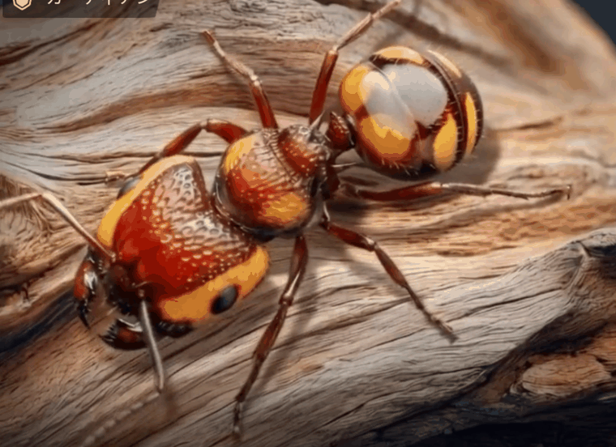
| Skill | Type | Effect |
|---|---|---|
| Dominance III | Command skill (formation with the special ant, not broken through) | Deployment cap +100 (+special ant Lv100). Max Lv: cap +18,100 (+special ant Lv100), soldier ant damage +25%. After breakthrough: formation ATK/DEF +25%, HP +10%, skill-8 trigger chance +5%, Guardian formation damage to CC'd targets +6% |
| Guarding Bulwark | Combat skill (whole formation with the special ant, range 5) | Triggers while leading Guardian Ants in battle. At battle start, damage taken by own column -31% → 50% (Max Lv); this decays 15% on turns 3 and 6, and shares 60% of the first 2 skill-damage instances taken by the back row each turn |
| Advanced Defense | Command skill (formation with the special ant) | Guardian Ant DEF +9.55% → 191% (Max Lv) |
| Advanced Attack | Command skill (formation with the special ant) | Guardian Ant ATK +9.55% → 191% (Max Lv) |
| Retaliating Jaws | Combat skill (1 enemy column, range 5) | On taking damage from a special ant, 31% → 40% (Max Lv) chance to counter: 110% → 250% (+special ant Lv*1%) damage. 60% chance to Confuse non-CC'd targets |
| Colony Charisma | Command skill (formation with the special ant) | Guardian ATK/DEF/damage/HP up, "Dominance III" deployment cap up |
| Solid Behemoth | Command skill (whole formation with the special ant) | Guardian Ant HP +14.7% → 66% (Max Lv) |
| Nature's Remedy | Combat skill (whole formation, range 5) | 56% → 70% (Max Lv) chance: all Guardian columns' healing received +5% → 7% (stacking), heals all allied columns (heal rate 67% → 180% Max Lv). If a healed column's troops are at or above their starting count, it deals 210% → 380% (Max Lv) damage to a random enemy column |
data/notebooklm_extraction_batch8_260719.md
Spotted Velvet (S6 Support / Carrier)
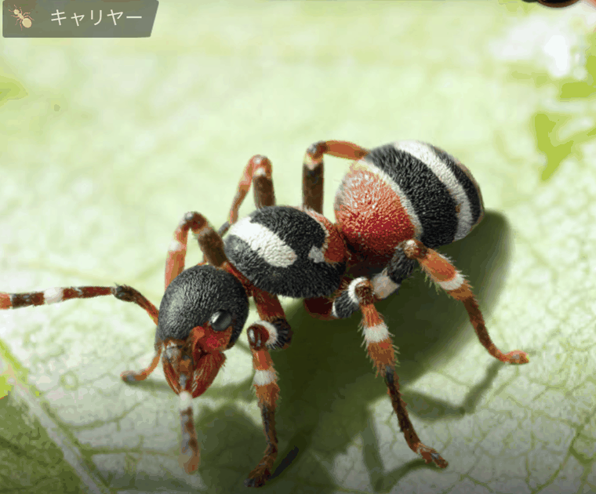
| Skill | Type | Effect |
|---|---|---|
| Dominance III | Command skill (formation with the special ant, not broken through) | Deployment cap +100 (+special ant Lv100). Max Lv: cap +18,100 (+special ant Lv100), soldier ant damage +25%. After breakthrough: formation ATK/DEF +25%, HP +10%, own column's skill-5 trigger chance +5%, damage taken by infected enemy columns +10% |
| Multidimensional Invasion | Combat skill (2 enemy columns, range 5) | 100% chance: 110% (+special ant Lv×1%) damage to 2 random enemy columns, target's overall skill trigger chance -0.1% (persists until battle end, stacking). Max Lv: 250% (+special ant Lv×1%) damage, -1.5% |
| Advanced Defense | Command skill (formation with the special ant) | Carrier Ant DEF +9.55%. Max Lv: +191% |
| Advanced Attack | Command skill (formation with the special ant) | Carrier Ant ATK +9.55%. Max Lv: +191% |
| Infectious Bite | Combat skill (1 enemy column, range 5) | After 1 turn of preparation, 75% chance: 290% (+special ant Lv×1%) damage to a random enemy column, inflicts Infected (takes an extra 46% of that damage, lasts 2 turns). Max Lv: 430% (+special ant Lv×1%) damage, extra +60% |
| Colony Charisma | Command skill (formation with the special ant) | Carrier Ant ATK/DEF +1.8%, combat speed +15, HP +6.6%, "Dominance III" deployment cap +17%, normal attack damage +5%. Max Lv: ATK/DEF +36%, combat speed +60, HP +18%, deployment cap +170%, normal attack damage +75% |
| Colorful Fuzz | Command skill (whole formation with the special ant) | Carrier Ant DEF +55%. Max Lv: +150% |
| Greedy Absorption | Combat skill (all columns in battle, range 5) | At the end of turns 2, 4, and 6, total damage dealt by all columns on both sides is tallied. The enemy column with the lowest troop count takes 27% of that total as damage; the allied column with the lowest troop count is healed for 0.5% of that total. Max Lv: 55% damage, 10% healing |
Honey Pot Ant (S5 Ranged / Carrier)
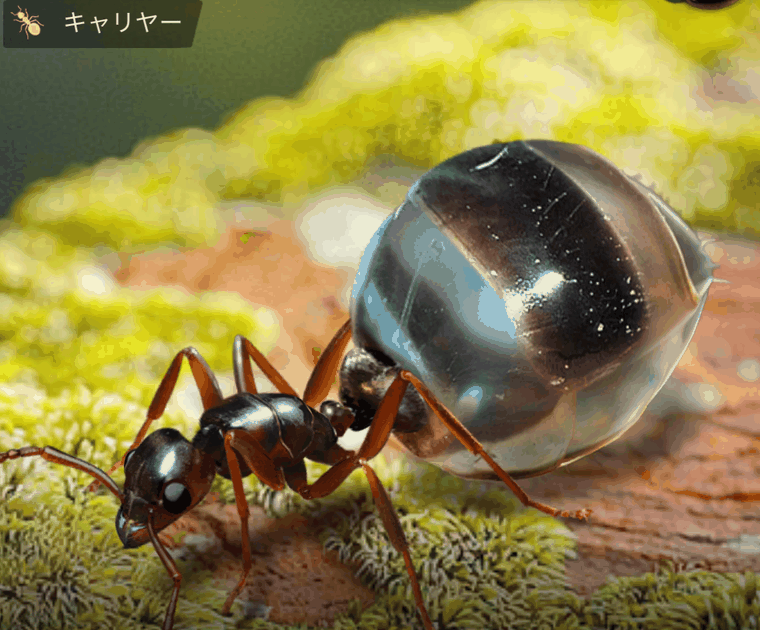
Only 7 skills are documented (the captured screenshot range didn't include the 8th skill screen).
| Skill | Type | Effect |
|---|---|---|
| Dominance III | Command skill (formation with the special ant) | Deployment cap +100 (+special ant Lv100). Max Lv: cap +18,100 (+special ant Lv100), soldier ant damage +25% |
| Bite | Combat skill (1 enemy column, range 5) | 67% chance: 182% (+special ant Lv×1%) damage to a random enemy column, inflicts Venom (146% damage per turn, lasts 1 turn). If the target is already Venomed, the Venom spreads to an uninfected enemy column (50% chance, +10% per debuff already on the target). Max Lv: 85% chance, 330% (+special ant Lv×1%) damage, 230% per turn, spread conditions unchanged |
| Advanced Defense | Command skill (formation with the special ant) | Carrier Ant DEF +8.3%. Max Lv: +166% |
| Advanced Attack | Command skill (formation with the special ant) | Carrier Ant ATK +8.3%. Max Lv: +166% |
| Spreading Poison | Combat skill (3 enemy columns, range 5) | 1 turn of preparation, 39.5% chance: 114% (+special ant Lv×2%) damage to all enemy columns, 50% chance to inflict Venom on the target (146% damage per turn, lasts 3 turns), 15% chance (+5% per debuff on the target) to reduce the target's healing received by 60%. Max Lv: 80% chance, 260% (+special ant Lv×2%) damage, 60% chance to inflict Venom (230% per turn), healing reduction conditions unchanged at 60% |
| Colony Charisma | Command skill (formation with the special ant) | Carrier Ant ATK/DEF +1.8%, combat speed +15, HP +6.6%, "Dominance III" deployment cap +17%, normal attack damage +5%. Max Lv: ATK/DEF +36%, combat speed +60, HP +18%, deployment cap +170%, normal attack damage +75% |
| Crystal Venom Gland | Command skill (whole formation with the special ant) | Carrier Ant ATK +40%. Max Lv: +135% |
Red-Jaw Trap-Jaw Ant (S6 Melee / Guardian)
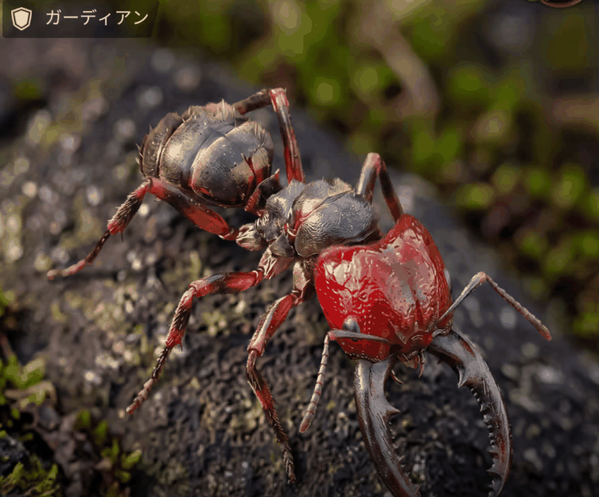
| Skill | Type | Effect |
|---|---|---|
| Dominance III | Command skill (formation with the special ant, not broken through) | Deployment cap +100 (+special ant Lv100). Max Lv: cap +18,100 (+special ant Lv100), soldier ant damage +25%. After breakthrough: formation ATK/DEF +25%, HP +10%, own column's skill-2 heal-trigger chance +5%, own column's skill-5 trigger chance +5% |
| Combat Support | Combat skill (allied column in range, range 5) | 41% chance, before taking damage: heals the allied column with lowest troop count (heal rate 52%), and that column's damage taken -3%. Lasts until battle end, stacks up to 10 (max 7 triggers per turn). Max Lv: 50% chance, heal rate 75%, damage taken -6% |
| Advanced Defense | Command skill (formation with the special ant) | Guardian Ant DEF +9.55%. Max Lv: +191% |
| Advanced Attack | Command skill (formation with the special ant) | Guardian Ant ATK +9.55%. Max Lv: +191% |
| Savage Subjugation | Combat skill (2 enemy columns, range 5) | 60% chance: 180% (+special ant Lv×1%) damage to 2 random enemy columns, 55% chance to inflict a random CC effect (Silence or Confuse, 1 turn). Max Lv: 65% chance, 320% (+special ant Lv×1%) damage, 55% chance CC |
| Colony Charisma | Command skill (formation with the special ant) | Guardian Ant ATK/DEF +1.8%, damage +1.2%, HP +6.6%, "Dominance III" deployment cap +17%, normal attack damage +5%. Max Lv: ATK/DEF +36%, damage +24%, HP +18%, deployment cap +170%, normal attack damage +75% |
| Sharp Red Jaws | Command skill (whole formation with the special ant) | Guardian Ant HP +14.7%. Max Lv: +66% |
| Reckless Onslaught | Combat skill (all enemy columns, range 5) | On turns 3 and 6, 90% chance: massive 150% (+special ant Lv×1%) damage to a surviving enemy column. Each time it attacks an enemy column, its own column takes 10% of that damage. Max Lv: 100% chance, 700% (+special ant Lv×1%) damage |
Fungus Farmer Ant (S6 Support / Guardian)
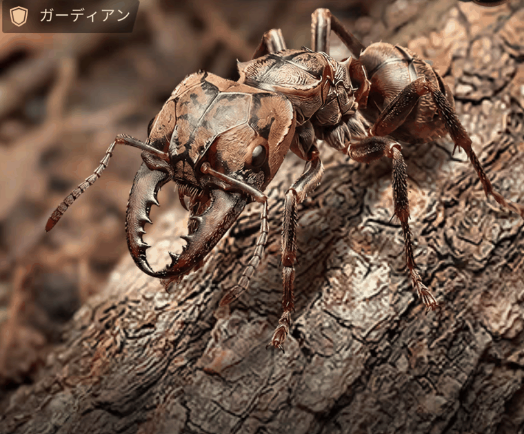
| Skill | Type | Effect |
|---|---|---|
| Dominance III | Command skill (formation with the special ant, not broken through) | Deployment cap +100 (+special ant Lv100). Max Lv: +18,100 (+special ant Lv100), soldier ant damage +25%. After breakthrough: formation ATK/DEF +25%, HP +10%, Guardian's skill damage to CC'd targets +5%, own column's skill-5 follow-up trigger chance +5% |
| Heavy Armor Strike | Combat skill (2 random enemy columns, range 5) | 75% chance: 120% (+special ant Lv×1%) damage, inflicts a 1-turn Mark. Each time an allied column damages a Marked target, 50% of that damage is stored (doubled if the target is CC'd). Max Lv: 80% chance, 260% (+special ant Lv×1%) damage |
| Advanced Defense | Command skill (formation with the special ant) | Guardian Ant DEF +9.55%. Max Lv: +191% |
| Advanced Attack | Command skill (formation with the special ant) | Guardian Ant ATK +9.55%. Max Lv: +191% |
| Giant Jaw Restraint | Combat skill (2 allied columns, range 5) | 76% chance: 2 random allied units' skill damage dealt +6% (2 turns). If a buffed unit successfully applies CC to an enemy column during that time, 80% chance to deal 110% damage to the target unit. Max Lv: 85% chance, +20%, 280% damage |
| Colony Charisma | Command skill (formation with the special ant) | Guardian Ant ATK/DEF +1.8%, damage +1.2%, HP +6.6%, "Dominance III" deployment cap +17%, normal attack damage +5%. Max Lv: ATK/DEF +36%, damage +24%, HP +18%, deployment cap +170%, normal attack damage +75% |
| Brown-Patterned Carapace | Command skill (whole formation with the special ant) | Guardian Ant DEF +55%. Max Lv: +150% |
| Leader's Protection | Pre-battle skill (all enemy columns, range 5) | On turns 2, 4, 6, and 8, consumes all stored damage and deals 25% of that stored value to all enemy columns, healing all allied columns for 6% of the damage dealt. Max Lv: 90% of stored value, 25% healing |
Striped Velvet Ant (S6 Support / Shooter)
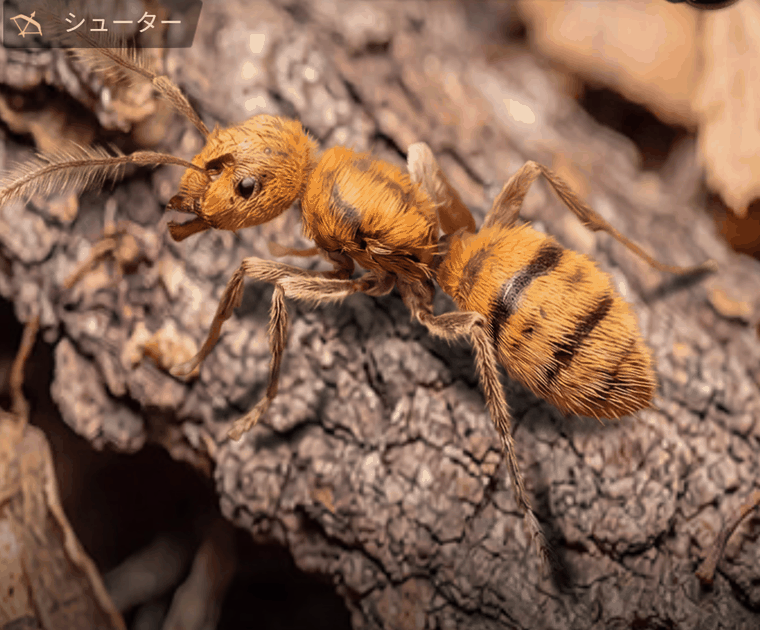
| Skill | Type | Effect |
|---|---|---|
| Dominance III | Command skill (formation with the special ant, not broken through) | Deployment cap +100 (+special ant Lv100). Max Lv: +18,100 (+special ant Lv100), soldier ant damage +25%. After breakthrough: formation ATK/DEF +25%, HP +10%, Shooter Ant skill damage +8%, own column's skill-8 trigger chance +10% |
| Colony Resonance | Pre-battle skill (whole formation with the special ant) | Counts allied active-skill triggers during battle; every 4/8/12 triggers, all allied columns' skill damage +0.6% and skill damage taken -0.6% (stacks up to 6, lasts until battle end). Max Lv: +11%, -11% |
| Advanced Defense | Command skill (formation with the special ant) | Shooter Ant DEF +9.55%. Max Lv: +191% |
| Advanced Attack | Command skill (formation with the special ant) | Shooter Ant ATK +9.55%. Max Lv: +191% |
| Charged Strike | Combat skill (all enemy columns, range 5) | On turns 3 and 6: 325% (+special ant Lv×1%) damage to all enemy columns. Damage rate rises with skill-2's counter, +5% per trigger (max +75%), then resets. Max Lv: 520% (+special ant Lv×1%) damage, +10% per trigger (max +150%) |
| Colony Charisma | Command skill (formation with the special ant) | Shooter Ant ATK/DEF +1.8%, damage +1.2%, HP +6.6%, "Dominance III" deployment cap +17%, normal attack damage +5%. Max Lv: ATK/DEF +36%, damage +24%, HP +18%, deployment cap +170%, normal attack damage +75% |
| Flexible Wingtips | Command skill (whole formation with the special ant) | Shooter Ant DEF +55%. Max Lv: +150% |
| Indomitable Heart | Combat skill (1 random allied column, range 5) | 65% chance: heals a random allied column (heal rate 105%), 35% chance to clear its debuffs, after which the healed column deals 90% damage to all enemy columns. Max Lv: 70% chance, heal rate 230%, 180% damage |
Twin-Spine Ant (S6 Ranged / Shooter)
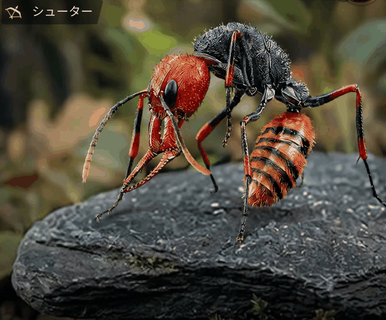
| Skill | Type | Effect |
|---|---|---|
| Dominance III | Command skill (formation with the special ant, not broken through) | Deployment cap +100 (+special ant Lv100). Max Lv: +18,100 (+special ant Lv100), soldier ant damage +25%. After breakthrough: formation ATK/DEF +25%, HP +10%, own column gains Guaranteed Hit (3 turns), own column's overall skill trigger chance +5% |
| Prey's Mark | Combat skill (1 enemy column, range 5) | 75% chance: 120% (+special ant Lv×1%) damage to the enemy column with lowest HP, inflicts a Mark (the next skill damage that column takes from this column is increased by 7%, lasts 2 turns). Max Lv: 80% chance, 360% (+special ant Lv×1%) damage, +10% |
| Advanced Defense | Command skill (formation with the special ant) | Shooter Ant DEF +9.55%. Max Lv: +191% |
| Advanced Attack | Command skill (formation with the special ant) | Shooter Ant ATK +9.55%. Max Lv: +191% |
| Ricochet Capture | Combat skill (all enemy columns, range 5) | 70% chance: 60% (+special ant Lv×1%) damage to all enemy columns; if any hit crits, deals the same damage again to 2 random enemy columns. Max Lv: 75% chance, 230% (+special ant Lv×1%) damage |
| Colony Charisma | Command skill (formation with the special ant) | Shooter Ant ATK/DEF +1.8%, damage +1.2%, HP +6.6%, "Dominance III" deployment cap +17%, normal attack damage +5%. Max Lv: ATK/DEF +36%, damage +24%, HP +18%, deployment cap +170%, normal attack damage +75% |
| Slender Legs | Command skill (whole formation with the special ant) | Shooter Ant ATK +55%. Max Lv: +150% |
| Brutal Power | Pre-battle skill (formation with the special ant) | During battle, own column's normal-attack and skill crit rate +16%, crit damage +26%. Every 10% of troops lost adds an additional +3% crit rate (stacking, lasts until battle end). Max Lv: crit rate +30%, crit damage +40%, +5% per 10% troops lost |
Amber Flower Ant (S6 Melee / Carrier)
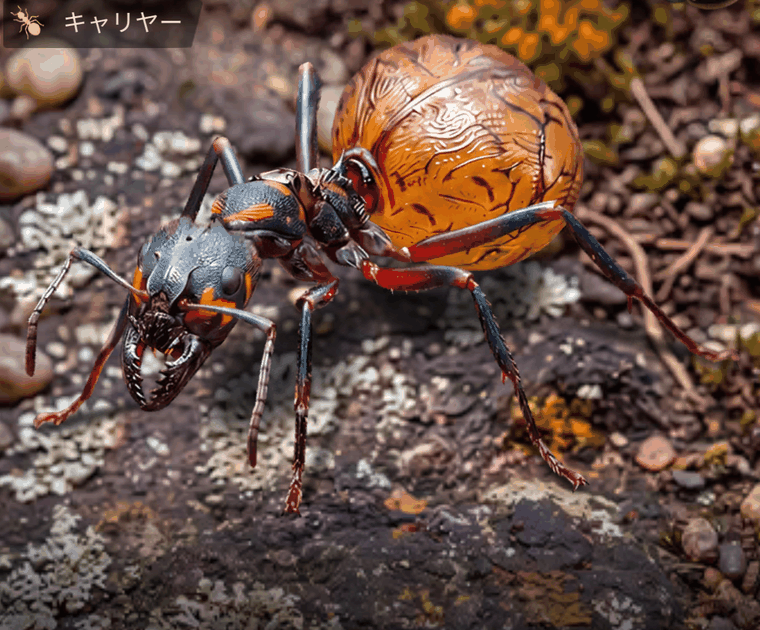
| Skill | Type | Effect |
|---|---|---|
| Dominance III | Command skill (formation with the special ant, not broken through) | Deployment cap +100 (+special ant Lv100). Max Lv: +18,100 (+special ant Lv100), soldier ant damage +25%. After breakthrough: formation ATK/DEF +25%, HP +10%, own column's skill-8 heal-trigger chance +10%, own column's skill-5 trigger chance +10% |
| Toxin Infusion | Pre-battle skill (all enemy columns in range, range 5) | Triggers when leading Carrier Ants. On turn 1, 72% chance to inflict all enemy columns with either Venom (110% damage per turn) or Bleed (90% damage per turn, more as troops drop) for 2 turns; 50% chance to refresh at the start of each following turn. Max Lv: 100% chance, 60% chance to refresh |
| Advanced Defense | Command skill (formation with the special ant) | Carrier Ant DEF +9.55%. Max Lv: +191% |
| Advanced Attack | Command skill (formation with the special ant) | Carrier Ant ATK +9.55%. Max Lv: +191% |
| Opportunist's Theft | Combat skill (2 random enemy columns, range 5) | 60% chance: 140% (+special ant Lv×1%) damage to 2 random enemy columns, 80% chance to extend all of the target column's debuffs by 1 turn. Max Lv: 65% chance, 310% (+special ant Lv×1%) damage |
| Colony Charisma | Command skill (formation with the special ant) | Carrier Ant ATK/DEF +1.8%, combat speed +15, HP +6.6%, "Dominance III" deployment cap +17%, normal attack damage +5%. Max Lv: ATK/DEF +36%, combat speed +60, HP +18%, deployment cap +170%, normal attack damage +75% |
| Amber Tail | Command skill (whole formation with the special ant) | Carrier Ant DEF +55%. Max Lv: +150% |
| Potential Unleashed | Combat skill (whole formation with the special ant, range 5) | After 2 turns of preparation, 80% chance: heals all allied columns (heal rate 210%), reduces the prep time of allied columns' prep-required skills by 1 turn, and prep-free skills' trigger chance +5%. Max Lv: 85% chance, heal rate 360% |
Ladybug Ant (S6 Ranged / Carrier)
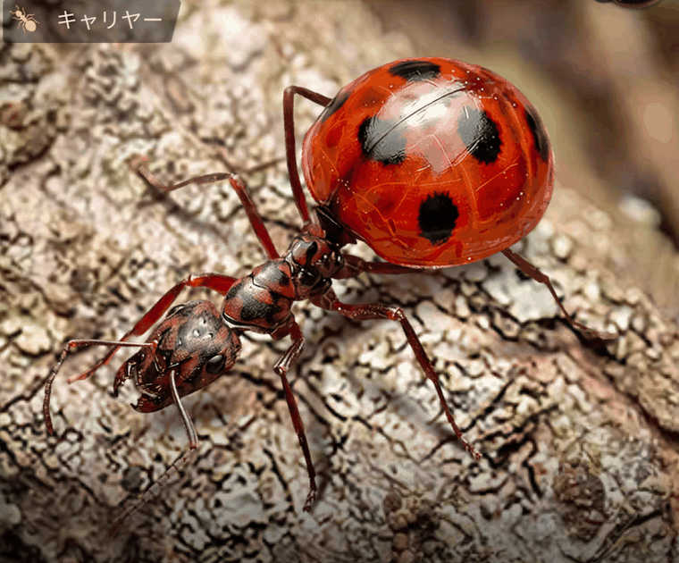
| Skill | Type | Effect |
|---|---|---|
| Dominance III | Command skill (formation with the special ant, not broken through) | Deployment cap +100 (+special ant Lv100). Max Lv: +18,100 (+special ant Lv100), soldier ant damage +25%. After breakthrough: formation ATK/DEF +25%, HP +10%, own column's skill-5 absorbed skill-attack stat +3%, own column's CC resistance +15% |
| Home Advantage | Pre-battle skill (1 random enemy column, range 5) | Triggers when leading Carrier Ants. Deploys an untargetable swarm on turn 1. Whenever an allied column inflicts a debuff on an enemy, the swarm adds 40% extra damage to that column and inflicts Bone-Gnaw (healing received -40%, takes 45 × Bone-Gnaw stacks damage at end of turn). Max Lv: extra damage 180%, 120 × stacks |
| Advanced Defense | Command skill (formation with the special ant) | Carrier Ant DEF +9.55%. Max Lv: +191% |
| Advanced Attack | Command skill (formation with the special ant) | Carrier Ant ATK +9.55%. Max Lv: +191% |
| Nutrient Plunder | Combat skill (all enemy columns, range 5) | 65% chance: 50% (+special ant Lv×1%) damage to all enemy columns. If the target column is debuffed, absorbs 6% of its skill-attack stat (lasts 2 turns); absorbs more each time the target uses a combat skill during that time. Max Lv: 70% chance, 210% (+special ant Lv×1%) damage, 20% absorption |
| Colony Charisma | Command skill (formation with the special ant) | Carrier Ant ATK/DEF +1.8%, combat speed +15, HP +6.6%, "Dominance III" deployment cap +17%, normal attack damage +5%. Max Lv: ATK/DEF +36%, combat speed +60, HP +18%, deployment cap +170%, normal attack damage +75% |
| Ladybug Camouflage | Command skill (whole formation with the special ant) | Carrier Ant ATK +55%. Max Lv: +150% |
| High Ground Dominance | Combat skill (all enemy columns, range 5) | 1 turn of preparation, 52% chance: 165% damage to all enemy columns. If this column's skill-attack stat exceeds the target's, deals an extra 10% as true damage (+4% per 5% it exceeds by, max 50%). Max Lv: 80% chance, 380% damage, extra 15% true damage (max 55%) |
Neutral Creatures
Ice Crystal Scorpion
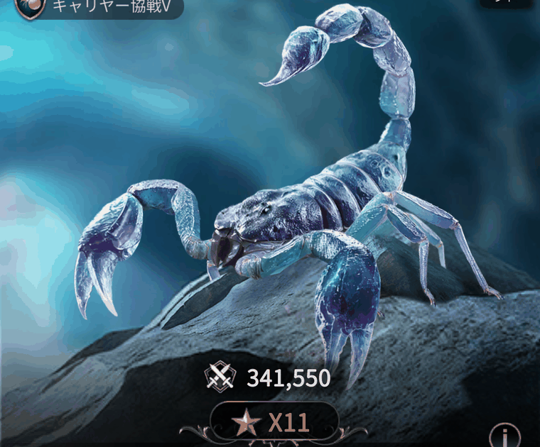
| Field | Value |
|---|---|
| Combat power / Star rank | 341,550 / ★X11 |
| ATK / DEF / HP | 7,280 / 7,280 / 2,910 |
| This creature's star talent points | +4 |
| Dual amplification (dmg amp & dmg reduction amp) | +5.0% |
| All soldier ant ATK / DEF | +85.0% / +85.0% |
| March speed / Combat speed | +70.0% / +140.0 |
| Bone-Gnaw trigger chance | +100.0% (also +100.0% post-synergy) |
| All soldier ant HP | +60.0% |
| Special ant skill ATK / DEF | +115.0% / +115.0% |
| Invasion ATK / DEF | +40.0% / +40.0% |
| All soldier ant damage | +30.0% |
Innate skill: After battle starts, before each enemy column acts each turn, 40% chance to inflict Backlash (takes 120% damage per turn, more as the target's troop count is higher; lasts 2 turns). Each time an enemy column takes Backlash damage, 30% chance to copy a random debuff onto another enemy column. Also, each time a debuff on any enemy column expires, deals 180% damage to that column (up to 6 triggers per turn).
Talent nodes confirmed on this account (partial list, not the full tree):
| Node | Lv | Effect |
|---|---|---|
| Attack Boost | 0/4 | All-column ATK +7.5% |
| Attack Boost | 0/2 | All-column ATK +10.0% |
| Evolution of Life | 0/3 | All-column HP +4.0% |
| Unbreakable Will | 0/4 | If any column is CC'd, damage taken -3.0% |
Glazed Mantis
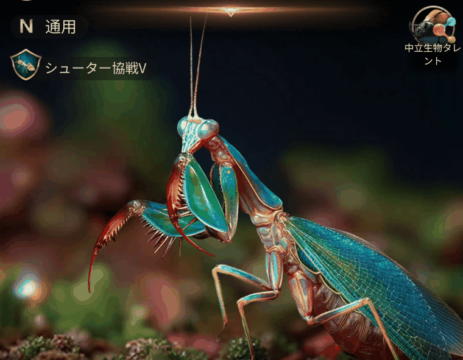
| Stat | Value |
|---|---|
| Power / Star rank | 341,550 / ★X11 |
| ATK / DEF / HP | 7,280 / 7,280 / 2,910 |
| Dual amplification (dmg amp & dmg reduction amp) | +5.0% |
| All soldier ant ATK / DEF | +85.0% / +85.0% |
| March speed / Combat speed | +70.0% / +140.0 |
| Fierce Attack trigger chance | +100.0% (also +100.0% post-synergy) |
| All soldier ant HP | +60.0% |
| Special ant skill ATK / DEF | +125.0% / +105.0% |
| Invasion ATK / DEF | +40.0% / +40.0% |
| All soldier ant damage | +30.0% |
Innate skill: At the start of each turn, 100% chance for 2 random allied columns to gain +1 normal attack count (1 turn). On turn 1, after all allied columns' normal attacks, 60% chance to trigger one already-used damage skill an extra time this turn (random pick if multiple). This chance decreases by 10% each subsequent turn.
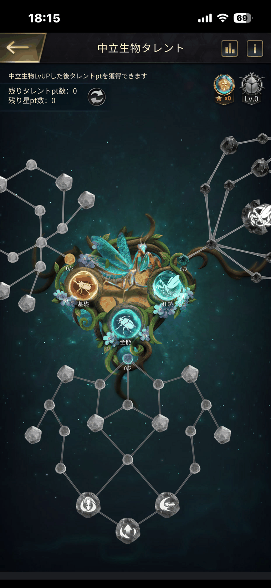
Talent nodes confirmed on this account (partial list, not the full tree):
| Node | Lv | Effect |
|---|---|---|
| Light Gear | 0/2 | March speed +5.0%, all-column ATK +3.0% |
| Evolution of Life | 0/2 | Soldier ant HP +3.0% |
| Battlefield Dominator | 0/10 | Each turn a column deals skill damage, that column's skill damage +0.8% (stacking, clears at turn end) |
| Defense Boost | 0/4 | Soldier ant DEF +6.5% |
| Attack Boost | 0/4 | Soldier ant ATK +12.0% |
| Catch Off Guard | 0/10 | A random enemy column's skill damage taken +1.5% (1 turn) |
| Attack Boost | 0/2 | Soldier ant ATK +6.0% |
| Attack Boost | 0/2 | Soldier ant ATK +8.0% |
| Intimidation | 0/4 | Allied type-advantage effect +1.5%, enemy type-advantage effect against you -1.5% |
| Battle Trick | 0/4 | All-column normal attack damage +2.25%, skill damage +2.25% |
| Evolution of Life | 0/4 | Soldier ant HP +4.0% |
data/notebooklm_extraction_batch9_260719.md
Sapphire Beetle
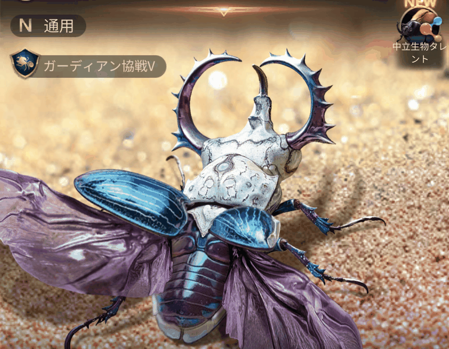
| Stat | Value |
|---|---|
| Power / Star rank | 341,550 / ★X11 |
| ATK / DEF / HP | 7,280 / 7,280 / 2,910 |
| Dual amplification (dmg amp & dmg reduction amp) | +5.0% |
| All soldier ant ATK / DEF | +85.0% / +85.0% |
| March speed / Combat speed | +70.0% / +140.0 |
| Steadfast trigger chance | +100.0% (also +100.0% post-synergy) |
| All soldier ant HP | +60.0% |
| Special ant skill ATK / DEF | +120.0% / +110.0% |
| Invasion ATK / DEF | +40.0% / +40.0% |
| All soldier ant damage | +30.0% |
Innate skill: Each time an allied column takes damage in battle, gain 1 stack of Steadfast (max 5 stacks). At the end of each turn, consume all Steadfast stacks: heal the allied column with the lowest troop count for a 50% heal rate per stack, and deal 80% damage per stack to all enemy columns, with a 30% chance to silence for 1 turn.
Talent branch "Insight" (nodes confirmed on this account, not the full tree):
| Node | Lv | Effect |
|---|---|---|
| Defense Boost | 0/2 | All-column DEF +7.0% |
| Evolution of Life | 0/2 | All-column HP +4.0% |
| Momentum of Balance | 0/10 | Columns at ≥50% troop strength gain a skill-ATK buff worth 1.5% skill-DEF; columns below 50% gain a skill-DEF buff worth 1.5% skill-ATK (checked at the start of each turn) |
| Attack Boost | 0/2 | All-column ATK +7.0% |
| Intimidation | 0/4 | Allied type-advantage effect +1.5%, enemy type-advantage effect against you -1.5% |
| Attack Boost | 0/4 | All-column ATK +7.0% |
| Evolution of Life | 0/4 | All-column HP +5.5% |
data/notebooklm_extraction_batch10_260719.md
Thorny Scorpion
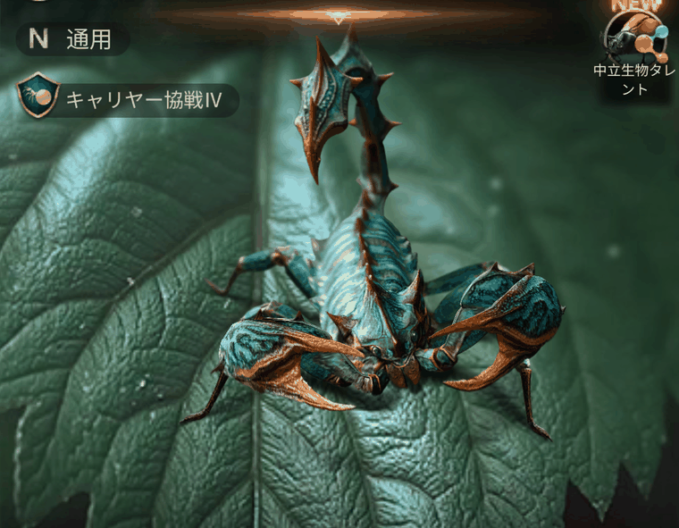
| Stat | Value |
|---|---|
| Power / Star rank | 341,550 / ★X11 |
| ATK / DEF / HP | 6,700 / 6,700 / 2,690 |
| Dual amplification (dmg amp & dmg reduction amp) | +5.0% |
| Talent specialization (starting talent pt) | +20 |
| Debuff damage dealt when a Carrier Ant is in the formation | +6.0% |
| All soldier ant ATK / DEF | +80.0% / +80.0% |
| March speed / Combat speed | +70.0% / +140.0 |
| Vicious trigger chance | +100.0% (also +100.0% post-synergy) |
| All soldier ant HP | +55.0% |
| Special ant skill ATK / DEF | +105.0% / +105.0% |
| Invasion ATK / DEF | +40.0% / +40.0% |
| All soldier ant damage | +30.0% |
Innate skill: Every 2 turns in battle, 50% chance to deal 400% damage to all enemy columns. Each time an allied column deals skill damage that turn, the damage ratio +50% (cap 1000%); each debuff applied +5% trigger chance.
Talent branch "Cruelty" (nodes confirmed on this account, not the full tree):
| Node | Lv | Effect |
|---|---|---|
| Mutant Scorpion Venom | 0/10 | Each turn, 3.5% chance to randomly apply one of Weaken (dmg dealt -4.0%) / Fragile (dmg taken +3.0%) / Venom (8.0% dmg taken per turn) / Bleed (6.0% dmg taken per turn, higher at lower troop count) to 2 random enemy columns for 1 turn |
| Thorny Carapace | 0/8 | When any column takes skill damage, 60.0% chance that hit is reduced by 3.0% |
| Savage Nature | 0/8 | All special ants' skill-2 trigger chance +0.8%, extra skill damage dealt +1.25% |
| Piercing Venom Spike | 0/8 | After a special ant uses an active skill, its next skill damage dealt +3.0% |
| Formic Strike | 0/6 | All-column extra skill damage +1.0% |
| Hardened Exoskeleton | 0/6 | All-column skill damage taken -1.5% |
data/notebooklm_extraction_batch11_260719.md; full transcript stored in the NotebookLM notebook "The Ants 攻略調査"